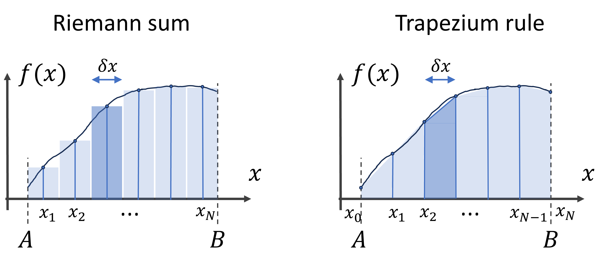
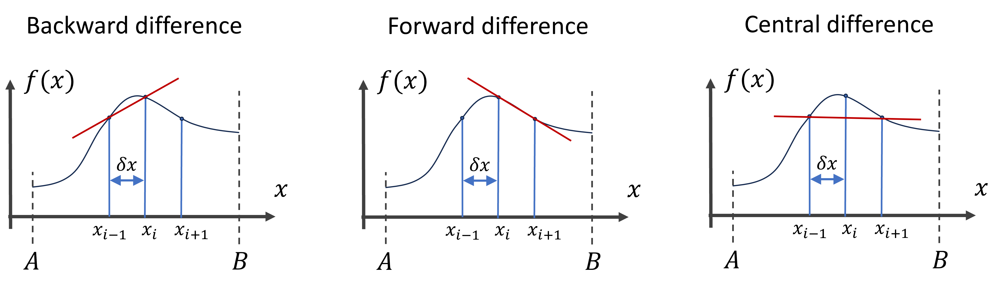

15 Numerical algorithms
15.1 Compute an integral numerically (Spring 2024)
Numerically integrate the following integral
\[ \int_0^2 \text{dx}\, (x^3 - x/3) \]
- As a first approximation try to use the rectangular approximation (Riemann sum). Therefore, divide the interval \([0, 2]\) in \(N\) parts and approximate the area surrounding each point by a thin rectangle. The sum of all rectangle areas then approximates the total area under the curve (see the figure below), i.e. the integral. For a general interval \([A, B]\) and function \(y = f(x)\) we can numerically calculate the integral using: \[ \int_A^B \text{dx}\, f(x) \approx \sum_{i = 1}^N f(x_i) \delta x \] With \(x_i = A + (i - 1/2)\times \delta x\), and \(\delta x = (B - A) / N\). This sum is also called Riemann sum. In principle, we should take the limit \(N\rightarrow \infty\) to obtain the analytic result or actual Riemann integral, but as an approximation we take \(N\) a finite (large number).

- Compare the result with the analytic result: \[ [x^4/4 - x^2/6 \, ]_0^2 = 10/3 \]
- Then use the trapezium rule, see the figure above, in which instead of rectangles we use trapeziums, following the curve more accurately. The area of a trapezium with two vertical sides and one horizontal bottom side is given the width times the average length of the vertical sides.
\[ \int_A^B \text{d}x\, f(x) \approx \sum_{i = 1}^N \frac{f(x_i) + f(x_{i-1})}{2} \delta x \] With \(x_i = A + i\times \delta x\), and \(\delta x = (B - A) / N\). This sum should more accurately reflect the area under the curve (the integral) than the Riemann sum.
- This formula is used so often that Numpy has a function for it:
np.trapz(y, x). Compare your result with the result of this function.
15.2 Compute derivatives numerically (Spring 2024)
The derivative of a function in a point can be numerically approximated by finite difference methods. The following formula gives us the forward finite difference: \[ \frac{\text{d} f(x)}{\text{d} x} \approx \frac{f(x_{i+1}) - f(x_{i})}{\delta x} \] If we would take the limit of \(\delta x \rightarrow 0\) then we would obtain the actual derivative. Here however we will approximate the derivative with a finite-sized \(\delta x\). We we want to calculate the derivative over an interval we will as we did for the integral divide the interval in \(N\) pieces and set \(\delta x = (B-A)/N\). Thereby we can plot the derivative over the whole interval \([A, B]\) (except of the last point at B, for which we can’t compute the forward derivative). Similarly, the backward finite difference is defined as: \[ \frac{\text{d} f(x)}{\text{d} x} \approx \frac{f(x_{i}) - f(x_{i-1})}{\delta x} \] And the mean of the two becomes the central difference: \[ \frac{\text{d} f(x)}{\text{d} x} \approx \frac{1}{2}\left( \frac{f(x_{i+1}) - f(x_{i})}{\delta x} + \frac{f(x_{i}) - f(x_{i-1})}{\delta x} \right) = \frac{f(x_{i+1}) - f(x_{i-1})}{2\delta x} \]

- Numerically compute and plot the forward derivative of \(f(x) = \sin(5 \pi x)/ (1 + x^2)\) within interval \([-3, 3]\). Ignore the issue at the last point.
- Do the same for the central difference, do you find any difference for small values of \(N\)?
15.3 Solve a system of equations
Solve the following system of equations in \(x\), \(y\), and \(z\):
\[ \left\{ \begin{aligned} x + y & = 0 \\ x + y + z & = 5 \\ 2x - z & = -2 \\ \end{aligned} \right. \]
by converting it to a matrix equation:
\[ \begin{pmatrix} 1 & 1 & 0\\ 1 & 1 & 1\\ 2 & 0 & -1\\ \end{pmatrix} \begin{pmatrix} x\\ y\\ z \end{pmatrix} = \begin{pmatrix} 0\\ 5\\ -2 \end{pmatrix} \] And then multiplying both sides of the equation by the inverse matrix from the left.
\[ \begin{pmatrix} 1 & 1 & 0\\ 1 & 1 & 1\\ 2 & 0 & -1\\ \end{pmatrix}^{-1} \begin{pmatrix} 1 & 1 & 0\\ 1 & 1 & 1\\ 2 & 0 & -1\\ \end{pmatrix} \begin{pmatrix} x\\ y\\ z \end{pmatrix} = \begin{pmatrix} 1 & 1 & 0\\ 1 & 1 & 1\\ 2 & 0 & -1\\ \end{pmatrix}^{-1} \begin{pmatrix} 0\\ 5\\ -2 \end{pmatrix} \] \[ \Rightarrow \begin{pmatrix} x\\ y\\ z \end{pmatrix} = \begin{pmatrix} 1 & 1 & 0\\ 1 & 1 & 1\\ 2 & 0 & -1\\ \end{pmatrix}^{-1} \begin{pmatrix} 0\\ 5\\ -2 \end{pmatrix} \] Thereby calculate and print the values for \(x\), \(y\), and \(z\). Verify by hand whether this is indeed a solution.